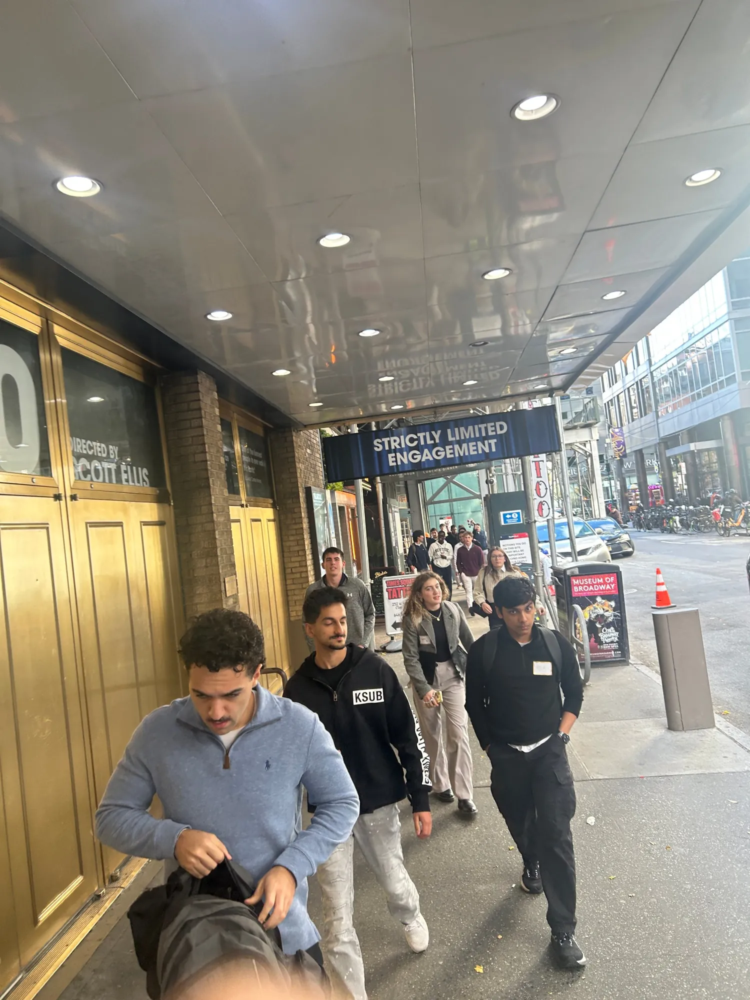
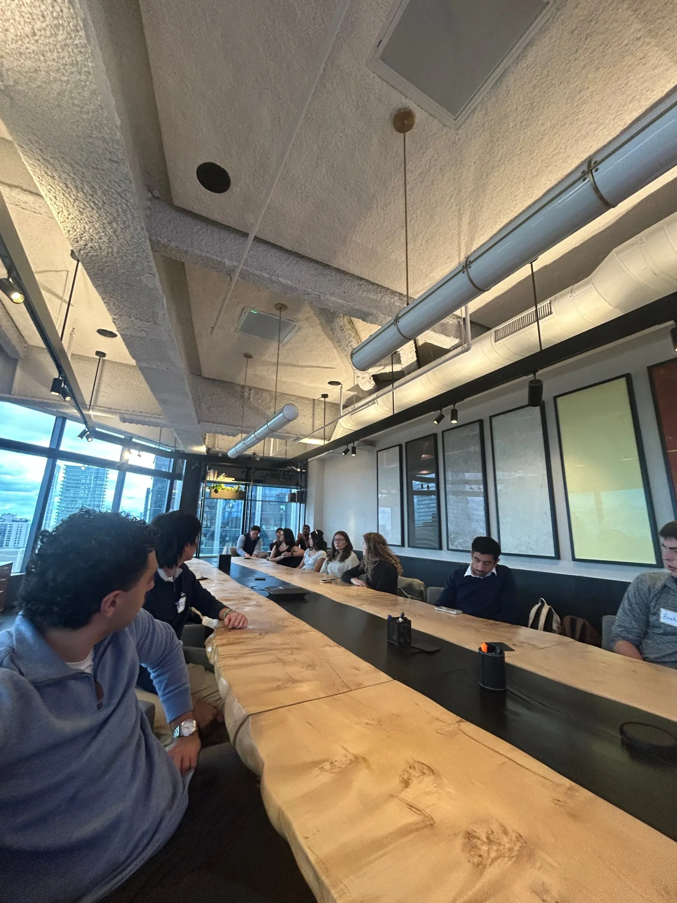
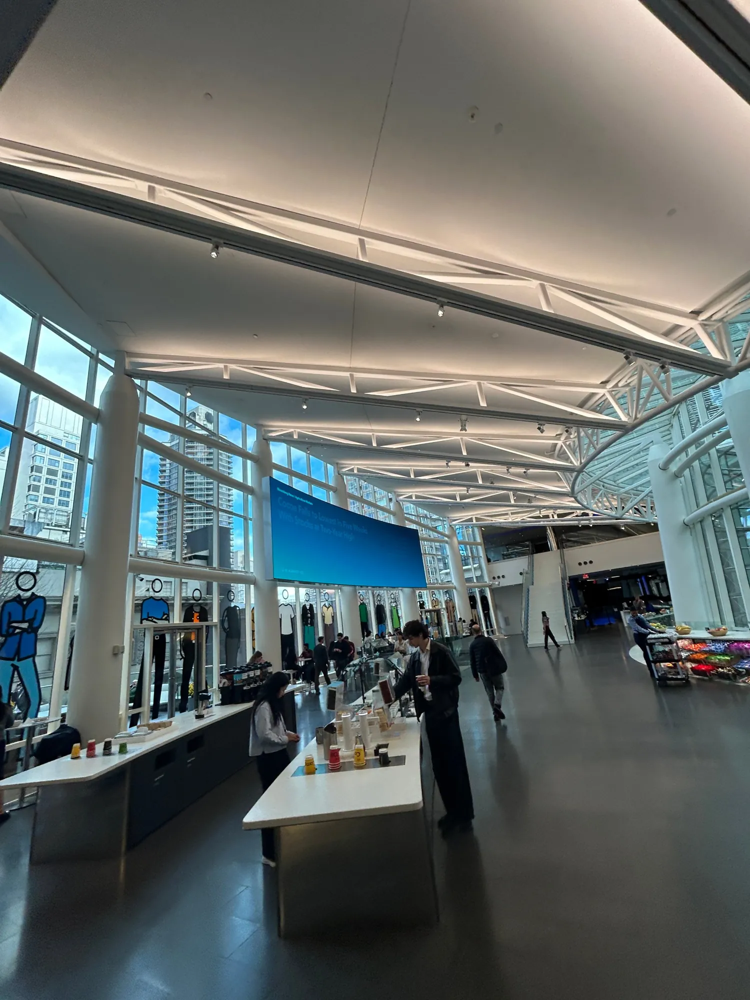
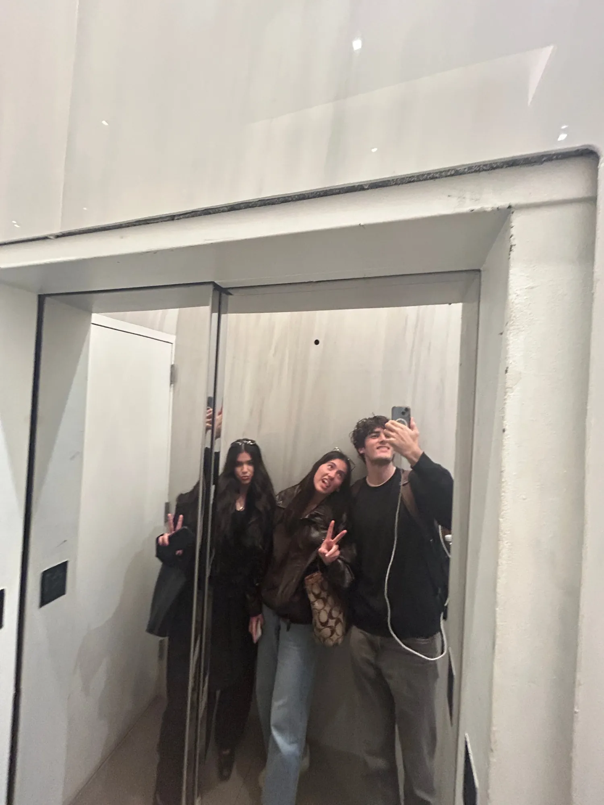

A 5 a.m. bus, a sprint through Midtown traffic, a fake Mike Bloomberg and one very wrong subway platform. Plus three rooms full of people building big things.
November 9, 2026Keyframe · Bloomberg · LineLeap7 min read
Bloomberg HQ, overlooking Central Park
Happy Valley
The bus pulled out of State College at 5 a.m. Most of us were half asleep. Rohan was a little late, but everyone made it on, and Mohammed, our driver, pointed us east for four hours to New York.
Sleep did not really happen. It was, by unanimous agreement, the bounciest bus ride any of us had ever taken. Every time someone dozed off, a pothole launched them out of their seat, and by the time we hit New Jersey that was the running joke of the trip.
Then the skyline came into view. Someone put on “Empire State of Mind,” and the whole bus was suddenly very awake.
The three rooms
Where we went.
Each visit gets its own full story this week. Here’s the day, start to finish.
Keyframe Capital
Benjamin Birnbaum, Partner · Terawatt co-founder
How to build the infrastructure for a market before the market exists.
We did not make it to Times Square. Midtown traffic was at a standstill and Keyframe was expecting us, so the call was made: everybody off, right now. A busload of NES members climbed out of a bus in the middle of a Manhattan street, to a chorus of honking, and started running.

Off the bus, on foot. Speed-walking through the Theater District to make Keyframe on time.
01 · Keyframe Capital
He built for two and a half years before the customers arrived.
Hosted by Benjamin Birnbaum, Partner at Keyframe Capital and co-founder of Terawatt
We checked in, rode up to the top, and walked into a boardroom with a huge live-edge wooden table and a view across the whole city. Phones came out immediately.

Keyframe Capital / Midtown Manhattan
Then Ben started talking, and the room went quiet. He graduated from Penn State in 2012 with a master’s in accounting, started at PwC, and left once he knew it wasn’t for him. Roles at McGraw Hill and a transit operator running buses in 240 cities put him in a front-row seat as Uber, EVs and self-driving cars started rewriting transportation.
In 2017 he saw what most people missed. Electric fleets would need enormous amounts of power, the way AI needs data centers today. He raised $100 million to quietly assemble real estate with grid access, with a simple pitch: if EVs don’t happen, we sell the land. Today Terawatt builds and runs charging hubs for Waymo and Zoox.
The questions kept coming: how he found his co-founders, how he landed Google’s former head of energy, how he raised that first round. To recruit her, he sat on a sidewalk with her until 2 a.m. in the middle of winter, talking it through. She believed in the company because he so clearly did.
Don’t walk into an investor meeting asking for money. Walk in with a plan and ask what they’d change.
Our takeaway from Ben Birnbaum
02 · Bloomberg
Fish tanks, free food, and a fake Mike Bloomberg.
Hosted by Evan Grimes, a Penn State alum, and Chris, Bloomberg analytics
We were on time for this one. Everyone got a visitor badge, and Evan, a fellow Penn Stater, met us upstairs to tell us how he got his start at Bloomberg.
The building is something else. About 6,000 people work there, with more than 10,000 passing through every day. There are fish tanks everywhere. The elevators play Bloomberg Radio. We walked past the live news set, stepped out onto a terrace above Midtown, and discovered that free snacks are basically a building feature.

Inside Bloomberg. Snacks, coffee and live headlines, on every floor we visited.
Then we sat down for the real session: the Bloomberg Terminal, explained by the people who support it. It all started with Mike Bloomberg buying coffee and bagels for traders and following them into their offices to ask what they needed. Evan and Chris broke the Terminal down with a framework they call DANCERS: data, analytics, news, communications, execution, research and support. They also gave us a tip worth the whole trip. Penn State’s campus terminals unlock Bloomberg’s certificates for free, as long as you sign up from the terminal itself and not the website.
Midway through, someone pointed across the floor. Look, it’s Michael Bloomberg. Every head in the room turned. It was not Michael Bloomberg. It was a very convincing lookalike, and we did not recover for several minutes.
AI won’t take your job. Someone who’s dangerous with AI might.
Our takeaway from Bloomberg
3companies in one dayNov 9, 2026
8,300+Penn Staters in Bloomberg’s PEOP directoryBloomberg
~500charging hubs Waymo needs in the US by 2030Terawatt
2M+people using the app we visited lastLineLeap
59th St–Lexington Av
Everyone was on the wrong platform. Except Rohan.
LineLeap was a subway ride away, and we were already cutting it close. We piled down to the platform. Rohan dropped his wallet. Then we lost Rohan, and decided he must have gone to the wrong platform.
He had not. We had. Rohan was the only person standing at the right one, and the rest of us had been confidently led the wrong way. A frantic sprint to the other side, a few texts to LineLeap saying we were on our way, and we squeezed onto a train so full that nobody needed to hold the rail.
Right platform, finally. 59th St–Lexington Av, on the way to LineLeap.
03 · LineLeap
It started with a $300 website and a lot of driving.
Hosted by Nick Becker, co-founder, with Avi Paley
LineLeap’s elevator fits about a quarter of NES at a time, so it took three or four trips to get everyone upstairs. Worth it.

Elevator trip 2 of 4 / approximately
LineLeap began when its founders saw hour-long bar lines at Michigan and Wisconsin with no technology anywhere in sight. The first version was a Squarespace site. Opening night, it sold $1,000 in line skips. Then came summers of driving campus to campus in a $2,000 Toyota Camry. The Camry crashed on the way to Penn State. They rented a car, kept driving, and signed Champs Downtown. Nick told us that deal saved the company.
For the first four years the founding team didn’t write code. They sold. They proved bars would pay before building anything sophisticated. Their advice for students was blunt: start something now, while you’re in school, and treat it like your top priority.
Work hard, work with people you like, drop your ego, and still back yourself.
Our takeaway from Nick Becker
The city
An hour and a half of New York, then home.
With the meetings done, we split up to eat and explore. Some of us found Mediterranean, others grabbed whatever was closest, and plenty of people just wandered. Then everyone piled back onto the bus, and the four hours home went to swapping photos, replaying the doppelganger, and retelling the subway story until it got a little bigger every time.
What we’re bringing back to Happy Valley.
None of our hosts waited for permission. Ben bet on power before the cars arrived. Mike Bloomberg bought bagels to learn what traders needed. LineLeap’s founders drove until a bar said yes. The common move was simple: go find the people with the problem, and keep showing up.
That’s what NES is for. You don’t need a startup to start. You need a room full of people who will push you to go find yours. Sometimes that room is on a very bouncy bus.
Take this into your week
Three moves worth stealing.
From Keyframe
Ask for feedback, not money.
Bring your plan to someone you admire and ask what they’d change. Relationships built that way turn into investors later.
From Bloomberg
Get certified on a campus terminal.
Type BCER on a Penn State Bloomberg terminal. Start with Finance Fundamentals, then Spreadsheet Analysis.
From LineLeap
Critique before you apply.
Want to work at a startup? Send them a thoughtful teardown of their product first. Show initiative before you’re hired.
The NYC ’26 series
Go deeper on each stop.
1 of 3 · Keyframe Capital
Build before the market
Ben Birnbaum on Terawatt, co-founders, and raising money without asking for it.
Coming this week
2 of 3 · Bloomberg
Inside the Terminal
The moat, the DANCERS framework, and a student’s guide to Bloomberg at Penn State.
Coming this week
3 of 3 · LineLeap
Sell first, code later
Nick Becker on the Camry, Champs Downtown, and growing to 2M+ users.
Coming this week
More from the day
This recap is edited and condensed from our notes. Takeaways are paraphrased, not direct quotes. Thank you to Keyframe Capital, Bloomberg and LineLeap for hosting us, and to every member who earned a seat through the NYC Race. And to Mohammed, for getting us there and back on the bounciest bus in Pennsylvania.